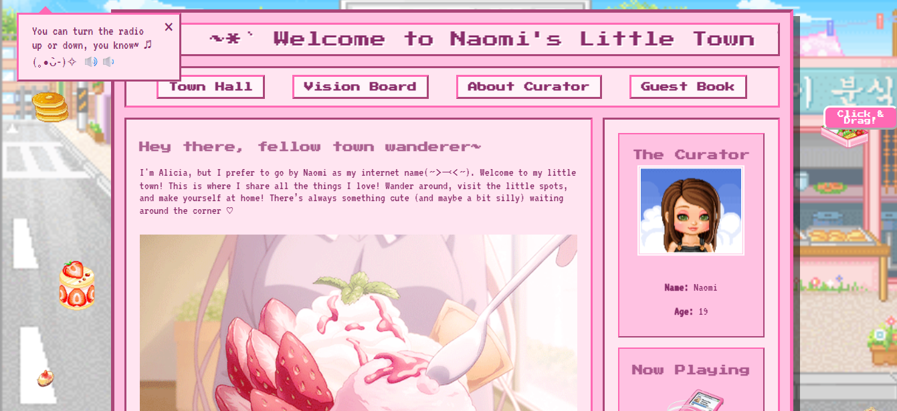

Tentang Proyek
Website Personal ini adalah website pertama non-formal yang saya kembangkan dengan tema yang saya suka. Pada proyek inilah saya belajar lebih banyak terkait html, css, dan javascript yang akhirnya terpakai juga dalam pembuatan website portofolio yang anda lihat sekarang. Website ini masih saya kembangkan agar terus menjadi lebih baik lagi.
Untuk detail lebih lanjut, silakan klik tombol di bawah ini.
Kunjungi WebsiteGaleri Visual
Beberapa tangkapan layar dari Website Personal Saya.
